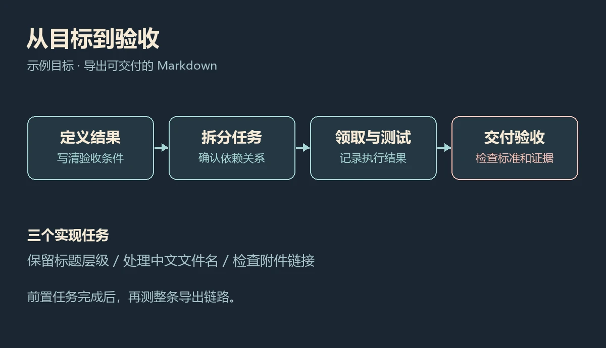

← 返回作品集本地桌面版 0.1.8 · 2026ClawPMClawPM 是一套给人和编程 Agent 共用的项目管理工具，将任务、验收条件和证据放进 Git 工程。换一个 Agent 接手 Markdown 导出时，它可以先看哪些子任务已做完、哪条回归还要跑，再接着执行。一次 Markdown 导出怎样交接任务和证据怎样落到 Git这是 Markdown 导出演示项目。先看需求树的分支和任务状态，再对照正文里的验收面板。放大查看 ↗桌面端 · Markdown 导出演示项目一次 Markdown 导出怎样交接先把目标拆成能验收的任务以 Markdown 导出为例，目标可以拆成保留标题层级、处理中文文件名、检查附件链接。每项有独立的通过条件，整条导出链路的回归测试要等三项都完成。打开桌面端后，可以在思维导图里展开任务关系，也能用看板、任务列表和甘特图查看同一批任务。Agent 工作流按下一步分组，标明哪些等待依赖、哪些可以领取、哪些待测试。放大查看 ↗交付流程 · 先检查单项，再跑回归。放大查看 ↗Agent 工作流 · 可以看到每项任务接下来要做什么。测试通过后，留下能复查的证据领取任务时会记录当前执行者和租约期限。提交验收前，任务详情会检查验收标准、阻塞、依赖、子任务、测试验证和交付证据。需要测试的任务要留下通过记录，例如修改的代码路径和回归结果。放大查看 ↗任务验收面板 · 演示数据展示测试产物和交付路径。任务和证据怎样落到 Git桌面端负责浏览、编辑和校验，配套 Skill 指导编程 Agent 领取任务、更新进度并写回证据。两边读写当前 Git 工程的 .clawpm 目录，任务各自保存为 JSON 文件。把它们和代码一起提交，就能按提交追溯状态变化。放大查看 ↗桌面端与编程 Agent 通过本地任务文件交接。放大查看 ↗Skill 安装中心 · 支持 Claude Code、Cursor、Codex 和 CodeBuddy。
 放大查看 ↗
放大查看 ↗ 放大查看 ↗
放大查看 ↗ 放大查看 ↗放大查看 ↗放大查看 ↗放大查看 ↗
放大查看 ↗放大查看 ↗放大查看 ↗放大查看 ↗